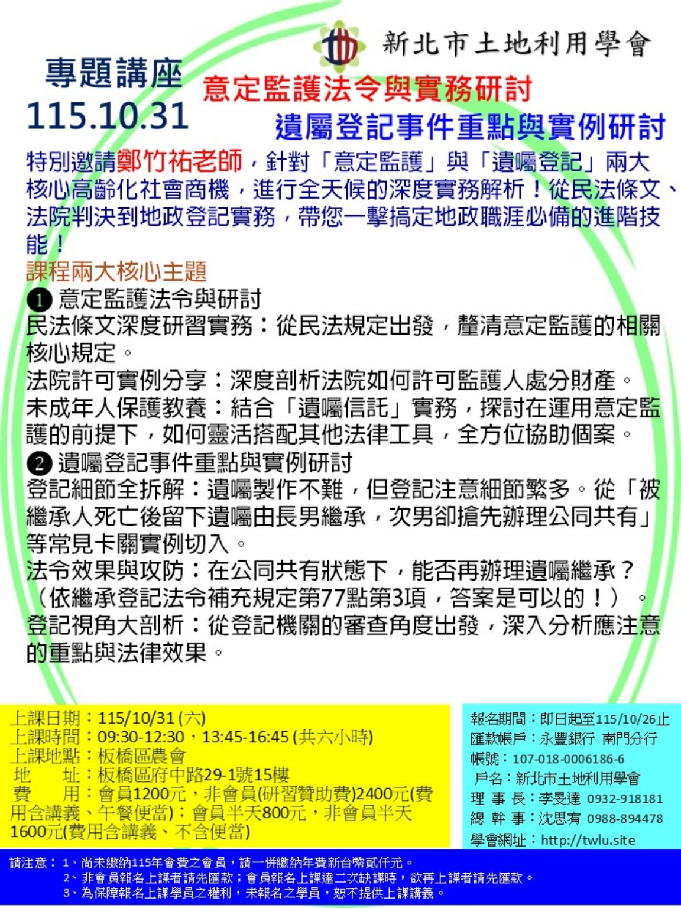

COURSE OVERVIEW
把觀念帶進真實情境。
這堂課以主題研習結合案例討論，讓法規、程序與實務經驗相互對照。您可以先閱讀下方課程重點，再查看參加資訊。
- 01
意定監護法令與實務
從民法規定出發，研討監護人處分財產的法院許可案例，並延伸理解遺囑信託與未成年人保護。
- 02
遺囑登記事件重點
從常見登記爭議切入，討論公同共有與遺囑繼承的關係，以及登記機關的審查觀點。
YOUR DAY OF LEARNING
一天的學習安排
- 上午課程 · 3 小時
- 午休
- 下午課程 · 3 小時
全天共 6 小時；實際課程安排以主辦單位現場說明為準。
當期費用紀錄
本活動已結束，以下保留原公告費用供查閱。
| 身分與方案 | 時段 | 費用（元） |
|---|---|---|
| 會員全天 | 整天 | 1,200 |
| 非會員全天 | 整天 | 2,400 |
| 會員半天 | 上午或下午 | 800 |
| 非會員半天 | 上午或下午 | 1,600 |
半天方案不含午餐。原報名表的銀行名稱與帳號後五碼均為選填，供查帳使用。
活動海報

公告與相關資訊
本頁依學會公開公告整理，課程異動、費用與報名規定請以原公告及報名頁為準。